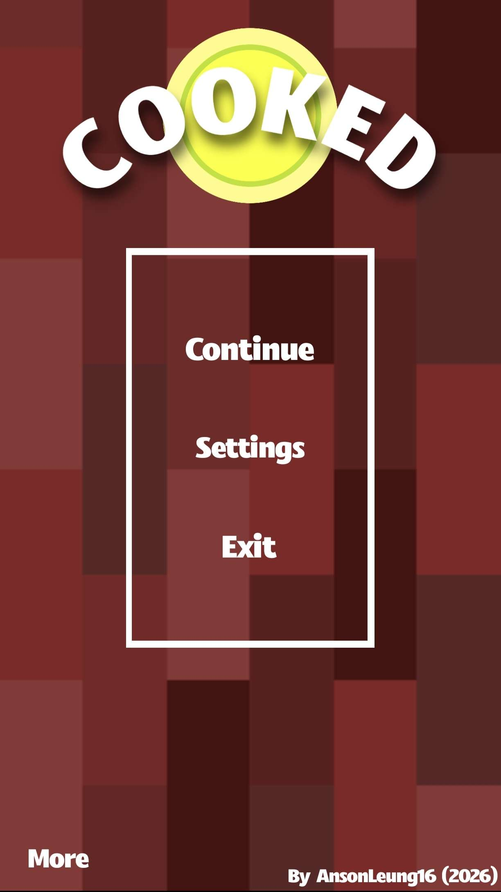
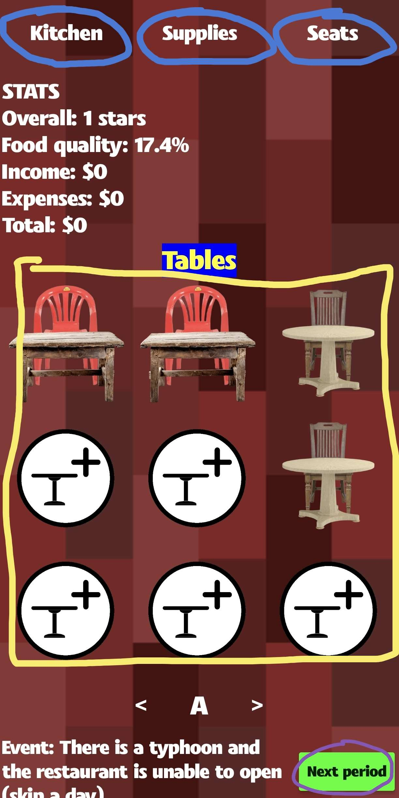
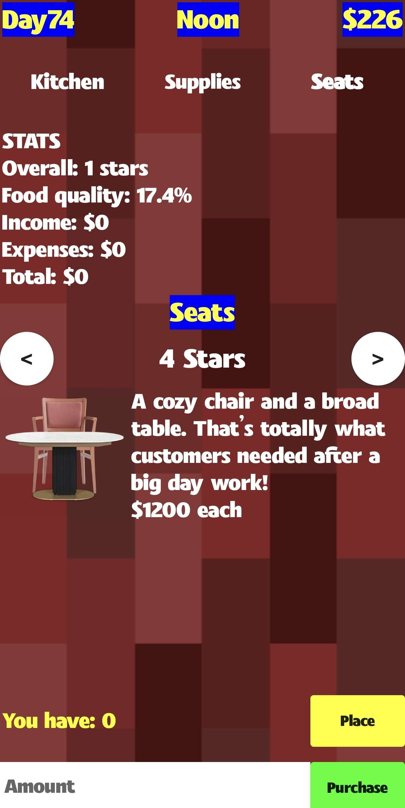
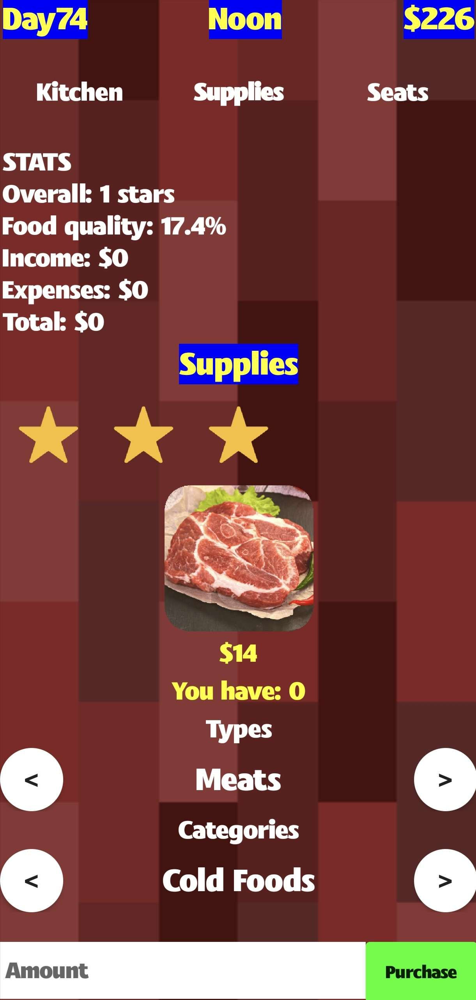
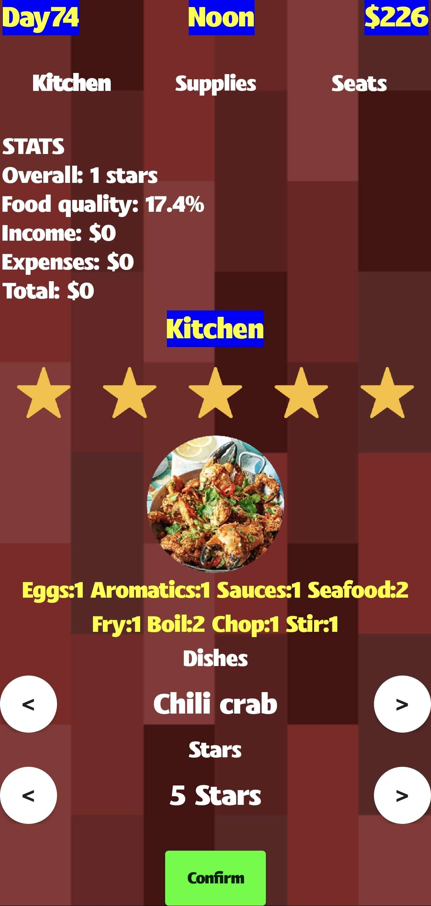
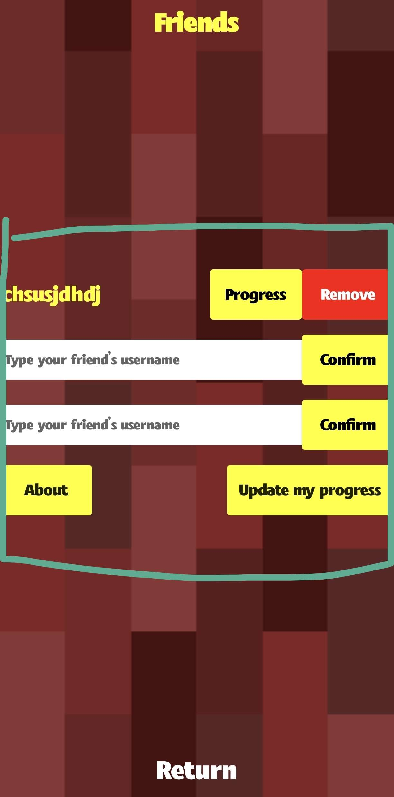

Start your own food business!

Start your own food business!
How to play

Welcome to Cooked! This game gives you an opportunity to build and expand a restaurant, and you are the one who is in charge of everything! Your goal is to get 100 five star reviews while spending the least number of days possible.

In this game, you need to buy chairs and supplies constantly to keep the restaurant running. You can switch to three different pages by clicking the buttons on top of the screen. The seats are in the middle of the screen. There are three areas (A, B,C), which means there are 27 slots in total. To place a seat, you need to go to the seat page and simply long click any seat if you want to remove them. After serving all the dishes you want, long click "Next period" and keep going. Make sure you are ready to face any accidents coming right up. There are chances you might lose or gain money due to certain events!

To get a certain star review, it depends on the quality of the seats. For example, if you are serving a customer sitting on a three star chair, then you should receive a three star review. However, for five stars exclusively, you need to serve a five star dish to a customer sitting on a five star chair. Furthermore, you cannot sell seats, so please make sure the amount you buy is proper.

Food supplies are crucial for cooking. You may check the ingredients needed for a dish on the kitchen page. Please note that buying higher tier food supplies requires your overall rating to be higher. Once it reaches 3 stars, all food supplies are fully unlocked.

There are six cooking actions: fry, boil, chop, knead, roast and stir.
Fry: Press the button to fry the food.
Boil: Click "stop" once the temperature reaches boiling point.
Chop: Shake your device like holding a knife to chop the food.
Knead: Guide the white circle to the red circle to press the dough.
Roast: Remember the numbers pattern before you start roasting.
Stir: Drag the bar horizontally rapidly just like stirring the mixture.

In the game menu, you can add friends to keep on track of their progress. Make sure you all update the game's progress regularly to let everyone compete with each other!
And that's the tutorial! Once you complete the game, your status will switch to "COOKED" instead of "COOKING". Have fun and keep cooking!
Start exploring the game!